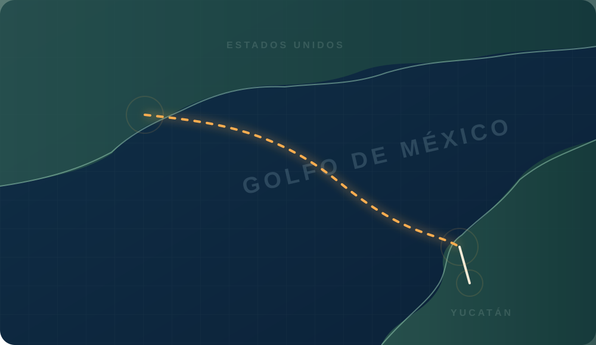

COMERCIO EXTERIOR.
DOCUMENTADO.
EXPEDIENTE INTEGRAL DE OPERACIÓN ADUANERA
De Houston a Yucatán. Una importación definitiva de 100,000 bolígrafos BIC Clic Stic, explicada a través de sus documentos, decisiones y controles.
01 / VISIÓN GENERAL
UNA OPERACIÓN.
TODO EL RECORRIDO.
El expediente conecta cada decisión comercial con su soporte de transporte, valoración aduanera, regulación y cierre documental.
100,000 razones para documentar cada detalle.
La empresa académica AnMayab Promocionales del Sureste, S.A. de C.V. adquiere bolígrafos BIC Clic Stic a 4imprint Academic Export Division. La carga sale de Houston por vía marítima, arriba a Progreso y termina en Mérida para su distribución en México.
El régimen elegido es importación definitiva A1. El expediente muestra el nexo entre factura, lista de empaque, manifestación de valor, COVE, pedimento, DODA, etiquetado NOM-050 y certificación de origen T-MEC simulada.
DOS ESCENARIOS · UNA MISMA BASE
Valoración y contribuciones
Base de cálculo académica: USD 31,000 + USD 3,250 incrementables = USD 34,250.
02 / TRAYECTO LOGÍSTICO
EL RECORRIDO
DE LA MERCANCÍA.
Tres nodos conectan la negociación con el despacho y la recepción. Selecciona cualquier ciudad para explorar sus hitos documentales.

03 / CENTRO DOCUMENTAL
44 FICHAS.
33 ORIGINALES + ANEXOS.
Cada ficha incluye los ocho campos exigidos, datos concretos del caso, vínculos con otros documentos y vista del archivo disponible.
Sin resultados
No se encontraron documentos con estos filtros. Prueba otra búsqueda o categoría.
04 / EVIDENCIA VISUAL
EVIDENCIAS DE ETIQUETADO.
NOM-050.
Fotografías y modelos visuales aportados para estudiar embalaje, NOM-050 y documentación UVA. Las escenas son ilustrativas.
Imágenes originales locales, con acceso desde la biblioteca, fichas individuales y vistas ampliables.
05 / BIBLIOTECA DOCUMENTAL
ARCHIVOS DEL EXPEDIENTE.
ARCHIVOS LOCALES.
Los PDF, DOCX e imágenes están incluidos dentro de este proyecto. Abre la vista integrada, descarga el archivo original o consulta su ficha técnica independiente.
06 / CONTROL DE CALIDAD
TRAZABILIDAD.
SIN SUPOSICIONES OCULTAS.
El expediente distingue documentos disponibles, modelos académicos, escenarios condicionales, discrepancias y documentos no emitidos.
* Se conservan las 33 fichas base y los anexos son complementarios. El documento 22 permanece visible como referencia informativa, pero no se exige en el escenario base; los documentos UVA y T-MEC se incluyen por decisión del proyecto.
La evidencia es tan importante como su origen.
- Documento final identificado en la carpeta compartida de Drive.
- Datos documentales de la operación académica para fichas y modelos de trabajo.
- Fotografías complementarias facilitadas para la galería y material UVA.
- Datos simulados explícitamente señalados, sin sustituir acreditaciones oficiales.